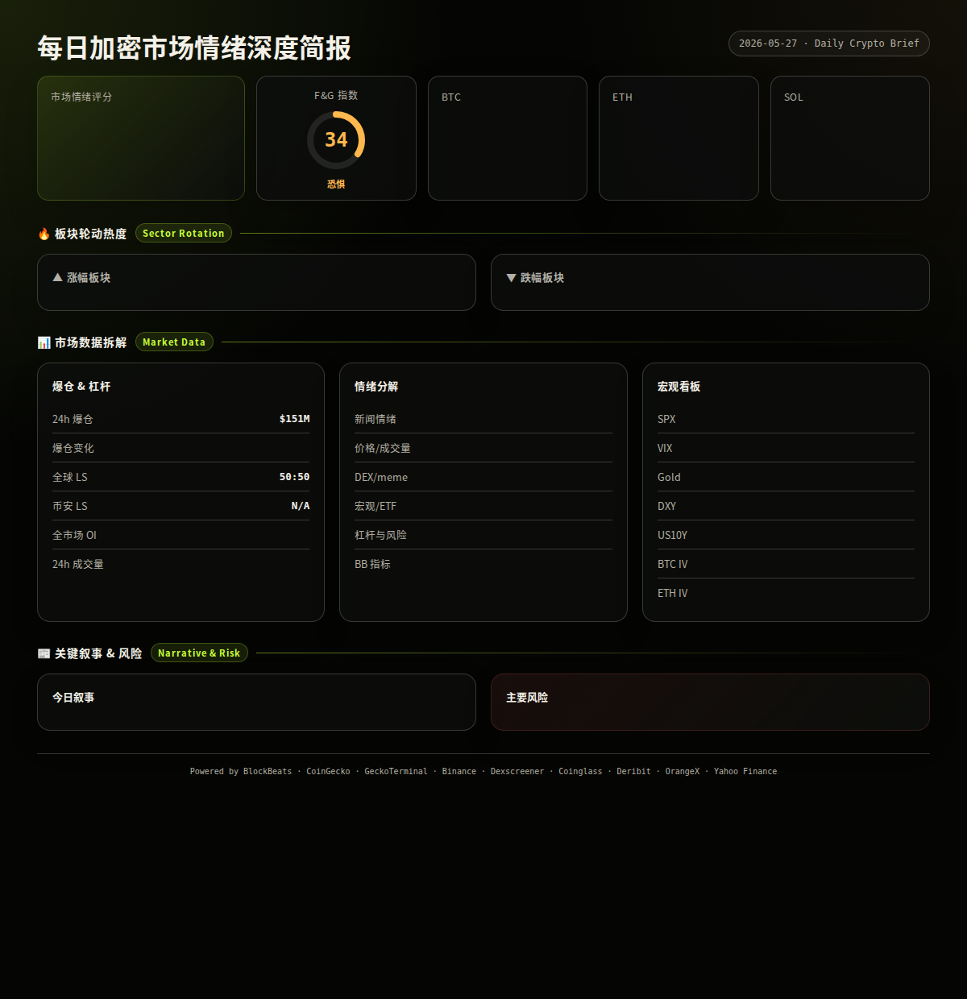
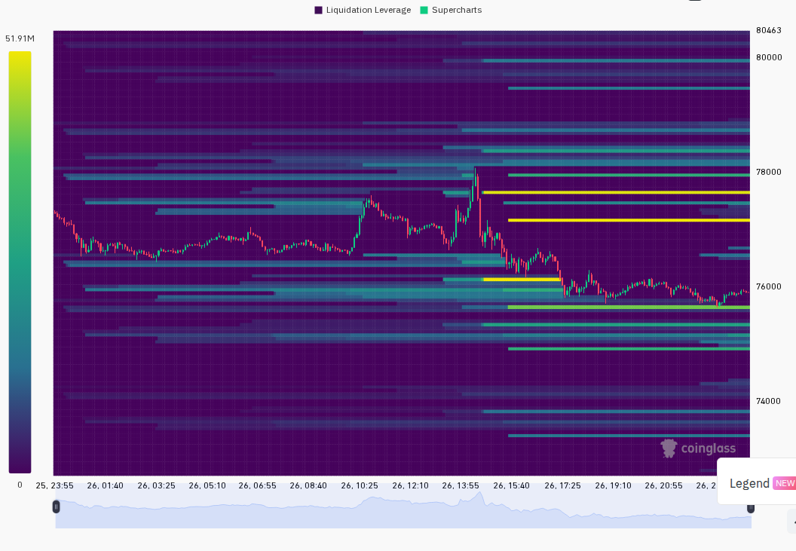
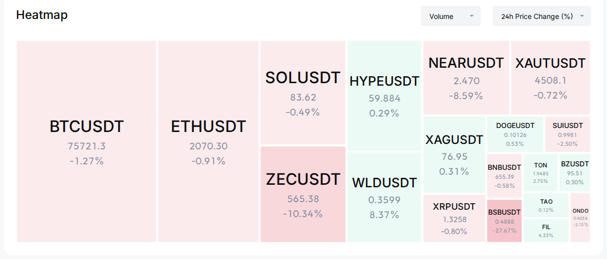

每日加密市场情绪深度报告
2026年5月27日 | 08:00 UTC+8
=== 第一段：叙事与风险面 ===
加密货币市场在宏观风险偏好高涨与地缘政治不确定性的矛盾中整体承压，BTC跌破$76,000关口后反弹乏力，主流币种全线下跌1-2%；AI板块逆势领涨成为唯一亮点，预测市场赛道市值暴涨94%暗示投机需求转向；全市场情绪维持"恐惧"，杠杆市场爆仓量激增126%至$3.41亿，空头略占优势。
24h变化: 情绪 37(恐惧) | BTC ↘1.7% $75,950 | ETH ↘1.7% $2,077 | SOL ↘1.3% $83.87 | VIX 17.0(正常) | 成交量 ↗51% | 爆仓 ↗126% $3.41亿 (multi-source)
BTC / ETH / SOL — 大盘承压回落
信息 1: BTC短暂跌破$76,000后反弹至$75,950附近，24小时跌幅1.7%，成交量较前日放大51%；ETH跌至$2,077，SOL报$83.87，三大币种期货溢价均为负值（-0.03%至-0.07%），表明衍生品市场缺乏多头溢价支撑。 (Binance, CoinGecko)
信息 2: Polymarket预测"BTC 5月触及$75,000"的概率已升至54%，市场对进一步下探的预期增强。 (BlockBeats)
信息 3: 某新建钱包地址正在持续囤积超过50万枚HYPE代币，当前价值约$3,093万，显示大资金在Hyperliquid生态回调中低位吸筹。 (BlockBeats)
ETF / 宏观 / 监管
信息 4: Trump公开表态"CFTC对预测市场拥有排他管辖权，美国必须维持全球加密货币之都地位"，利好预测市场和合规加密交易。S&P 500与Nasdaq在AI热潮与和平预期推动下双双创历史新高，Micron市值突破万亿。 (BlockBeats, Yahoo Finance)
信息 5: 美联储6月维持利率不变概率高达97.3%，美10年期国债收益率一周内下行17.9bp至4.482%，美元指数DXY一周微跌0.2%至99.1——利率与美元同步走弱为风险资产提供宏观顺风。 (BlockBeats)
信息 6: CME Group正式推出Avalanche (AVAX) 和 Sushi (SUSHI) 期货合约，传统金融衍生品继续向山寨币扩展覆盖。 (BlockBeats)
AI / Meme / 山寨叙事
信息 7: AI板块成为今日唯一强势叙事：FET +9.6%、WLD +14.4%、RENDER +6.2%均在BTC下跌背景下逆势拉升；Base推出Base MCP使AI Agent可直接连接链上账户，AI与加密融合加速。 (CoinGecko, BlockBeats)
信息 8: Pump Fun发布跨链升级，支持Ethereum、Base、BNB Chain等生态的无摩擦交易，Meme发射平台向多链扩张。 (BlockBeats)
信息 9: Coinbase宣布上线MetaDAO (META) 和 Derive (DRV)，交易所上新节奏未受市场回调影响。 (BlockBeats)
预测市场 / VC融资
信息 10: 预测市场赛道24h市值暴涨94.3%居板块之首，GambleFi +86.7%、DRC-20 +88.5%紧随其后；Hyperliquid HIP-4测试网上线世界杯预测市场。 (CoinGecko, BlockBeats)
信息 11: 跨链基础设施Squid完成$600万融资由North Island Ventures领投；AI初创Hark以$60亿估值完成$7亿A轮融资。加密基础设施与AI赛道持续吸引VC资金。 (BlockBeats)
板块轮动
信息 12: 24h涨幅前三板块：预测市场 +94.3%、DRC-20 +88.5%、GambleFi +86.7%。跌幅前三：Flaunch生态 -35.8%、OpenServ生态 -25.7%、Desci Meme -18.9%。资金从DeSci/Meme向预测市场与博彩类转移。 (CoinGecko)
风险 1: BTC在$75,600-$78,000区间形成短期震荡，若跌破$75,600则可能加速向$73,000-$74,000区域下探。 → 观察: 若BTC放量站稳$77,000以上则空头陷阱确认；失效条件: 若BTC未破$75,600且成交量萎缩则维持区间震荡。 (Binance, analysis)
风险 2: 24h全网爆仓$3.41亿，较前日激增126%，多空比例49.75:50.25空头略占优——若BTC进一步下跌，多头踩踏风险上升。 → 观察: 若爆仓量次日回落至$1.5亿以下则恐慌缓解；失效条件: 若爆仓量继续放大至$5亿以上则系统性去杠杆启动。 (Coinglass, analysis)
风险 3: Polymarket预测BTC月底触及$75K概率54%，预测市场定价与现货市场可能形成负反馈循环。 → 观察: 若该概率降至30%以下则市场情绪转暖；失效条件: 若概率升至70%以上则空头叙事强化。 (BlockBeats, analysis)
风险 4: AI板块强势与大盘背离——历史经验表明单一板块在整体下跌中逆势拉升通常不可持续，可能为"最后一拉"出货。 → 观察: 若ETH/SOL跟随AI反弹则板块轮动健康化；失效条件: 若AI板块次日集体回吐超50%涨幅则确认为短期炒作。 (analysis)
风险 5: 美伊核谈判陷入僵局，以色列国防军在黎巴嫩南部发动地面攻势——中东地缘风险仍未消退，可能随时触发避险情绪。 → 观察: 若Gold价格24h内上涨超1%则避险模式启动；失效条件: 若谈判取得突破性进展则风险偏好回升。 (BlockBeats, Yahoo Finance)
风险 6: ONDO CEO突然去世——治理结构不确定性可能导致ONDO代币价格异常波动，DeFi RWA赛道情绪受冲击。 → 观察: 若ONDO团队48h内公布清晰过渡方案则恐慌消退；失效条件: 若出现社区分裂或资金分歧则RWA叙事受损。 (BlockBeats)
非财务建议声明: 本报告仅提供市场数据和情绪分析，不构成任何买卖建议。
5月27日 — BTC月度期权到期(约$18亿名义价值) — 中性/偏空，到期前后通常伴随IV下跌和方向性波动 (Deribit, analysis)
5月28日 — 美国4月PCE物价指数发布 — 若低于预期则利多风险资产（降息预期升温）；若超预期则利空 (宏观日历, analysis)
5月29日 — ETH月度期权到期 — 中性，ETH IV 41%处于正常区间，到期后波动或收敛 (Deribit, analysis)
5月30日 — Pump Fun跨链功能正式上线 — 偏多Meme/Base生态，可能带动新链上活跃度 (BlockBeats, analysis)
6月1日 — Optimism主网质押优先队列机制四周实验启动 — 偏多OP生态，可能带动L2质押叙事 (BlockBeats, analysis)


=== 第二段：数据与技术面 ===
综合评分: -10/100
5项分项评分:
新闻情绪: -15/100 — 大盘下跌主导头条，BTC破位$76K、全市场爆仓激增、地缘不确定性，但AI叙事和SPX新高提供部分对冲。 (BlockBeats)
价格/成交量: -25/100 — BTC/ETH/SOL全线下跌1.3-1.9%，成交量放大51%表明卖盘主动，期货溢价全面转负显示多头缺乏信心。 (Binance, CoinGecko)
DEX/meme 活跃度: -10/100 — Solana DEX热门池有3个24h成交量超$400万但代币质量整体偏低，新池无合格标的，链上活跃度集中在低质量Meme。 (GeckoTerminal)
宏观/ETF/流动性: +15/100 — SPX创历史新高、VIX 17.0处于正常区间、美元走弱（DXY 99.1）、10Y收益率一周下滑17.9bp，宏观环境对风险资产有利；但加密与美股出现背离。 (Yahoo Finance, BlockBeats)
杠杆与风险: -15/100 — 爆仓量$3.41亿(+126%)处于偏高水平，市场多空比接近50:50但空头略占优，期货溢价全面转负，持仓量仅增1.47%说明新增资金谨慎。 (Coinglass, Binance)
BlockBeats 市场脉动指标完整拆解:
· 市场脉动指数: 无信号（综合情绪中性）
· 整体市场流动性指数: Hold
· 比特币流动性指数: Hold
· 以太坊流动性指数: Hold
· 过去24小时累积比特币流动性指数: Hold
· 整体市场流动性（以比特币为单位）: Hold
· 合约多空比偏离指数: Hold
· 山寨币抗跌指数: Hold
· Bitfinex BTC/USD 溢价: Hold
· USDC/USDT 溢价: Buy
· Binance USDT 借贷利率: Buy
· 持仓量加权资金费率年化利率: Hold
综合: 2 Buy / 0 Sell / 10 Hold — 底部资金面信号（USDC溢价、借贷利率低位）偏正面，但缺乏趋势确认信号，市场整体处于观望等待方向选择的阶段。 (BlockBeats)
BTC: $75,950 (-1.74%), 24h成交量17,061 BTC, 高$78,080 低$75,678, 振幅3.17%。最后一根1h蜡烛O=$75,930 C=$75,968呈小阳线但收盘低于开盘区间中位，反弹力度偏弱。期货溢价: markPrice=$75,947 vs indexPrice=$75,968, 溢价-0.028%（偏空）。 (Binance)
ETH: $2,077 (-1.70%), 24h成交量282,579 ETH, 高$2,140 低$2,055, 振幅4.16%。最后6根1h蜡烛主要在$2,069-$2,078窄幅整理，$2,100成为短期阻力。期货溢价: markPrice=$2,077 vs indexPrice=$2,078, 溢价-0.033%（偏空）。 (Binance)
SOL: $83.87 (-1.31%), 24h成交量2,355,521 SOL, 高$86.13 低$83.15, 振幅3.58%。价格在$83.5-$84区间企稳但动能不足。期货溢价: markPrice=$83.84 vs indexPrice=$83.90, 溢价-0.067%（偏空，三币中最弱）。 (Binance)
全球总市值: $2.619万亿, 24h成交量$990.8亿, BTC市占率58.01%, ETH市占率9.55%。BTC.D 24h变化-1.44%——山寨币相对BTC走强，资金从BTC向山寨轮动。 (CoinGecko)
衍生品杠杆（全市场，过滤OI<$1,000万的小所）:
BTC永续合约: 全市场总OI $666.9亿, 总成交量$1,572.9亿。最高资金费率: Variational Omni 1,095%(异常/忽略), 主流所: Binance 0.74%-1.00%, OKX 0.54%, Bybit 0.14%-0.15%, Hyperliquid -0.15%。Binance 1%费率偏高需关注。 (CoinGecko)
ETH永续合约: 全市场总OI $411.3亿, 总成交量$936.5亿。主流所: Binance 0.03%-0.77%, OKX 0.48%-0.91%, Bybit 0.03%-0.20%, Hyperliquid -0.01%。费率整体温和，无异常。 (CoinGecko)
SOL永续合约: 全市场总OI $71.4亿, 总成交量$169.9亿。主流所分歧显著: Binance 0.13%-0.66%, OKX 0.91%, Bybit -0.66%至1.00%, Hyperliquid -0.12%。SOL费率多空分歧最大，反映市场对SOL方向缺乏共识。 (CoinGecko)
爆仓数据: 24h全网爆仓$3.41亿，较前日+125.94%。全球多空比 49.75%多 / 50.25%空——空头略占优势。爆仓量激增但多空比接近50:50，说明多空双方均在被动平仓，市场分歧加大而非单边恐慌。 (Coinglass)
注意: 币安TV多空比和top_perps数据在本日Coinglass抓取中缺失，无法提供Binance Top Trader仓位数据。
跨平台OI比较（BlockBeats合约数据，5月25日）: Binance OI $216.7亿 / 成交量$250.6亿 | Bybit OI $107.8亿 / 成交量$83.7亿 | Hyperliquid OI $69.6亿 / 成交量$32.2亿。Binance仍占据绝对主导地位，Hyperliquid OI持续增长已超Bybit的65%。 (BlockBeats)
宏观看板:
· SPX: 7,519 (+0.61% 24h, +2.25% 5d) — 美股强势创新高，风险偏好处于高位。 (Yahoo Finance)
· VIX: 17.01 — 正常区间(15-20)，市场情绪温和，未现恐慌。 (Yahoo Finance)
· DXY: 99.10 (+0.06% 24h, -0.21% 7d) — 美元持续走弱，为全球流动性提供顺风。 (BlockBeats)
· US10Y: 4.482% (+0.3bp 24h, -17.9bp 7d) — 10年期收益率一周大幅下行，债市定价降息预期。 (BlockBeats)
· Gold: $4,522 (+0.02% 24h) — 黄金几乎持平，未跟随SPX上涨也未避险。 (Yahoo Finance)
BTC-SPX相关性: 当前BTC与SPX出现明显背离——SPX创新高而BTC下跌，传统"科技股与加密同步"的逻辑短期失效。BTC-Gold相关性: 两者均横盘偏弱，无明显关联方向。 (analysis)
期权波动率 (Deribit):
· BTC ATM IV: 32.0% (5月29日到期, 行权价$76,000) — 低于40%处于低波动区间，期权市场定价BTC近期大幅波动概率较低。 (Deribit)
· ETH ATM IV: 41.1% (5月29日到期, 行权价$2,100) — 处于40-60%正常区间下沿。 (Deribit)
· ETH-BTC IV价差: 9.1% — 低于15%阈值，未出现山寨币投机溢价，市场风险偏好偏低。 (Deribit)
以下为CoinGecko热门币中24h涨幅超5%且有叙事支撑的标的:
WLD (Worldcoin, 多链): $0.378, 24h +14.4%, 市值$12.9亿。催化剂: AI板块整体强势，Worldcoin在身份验证与AI代理叙事中占据核心位置。风险: 流通盘占比低，FDV与流通市值差异大，解锁压力持续存在。 (CoinGecko, BlockBeats)
FET (Artificial Superintelligence Alliance, 多链): $0.254, 24h +9.6%, 市值$5.7亿。催化剂: AI Agent叙事升温，Base MCP发布推动AI与链上交互概念。主要流动性在CEX。风险: 涨幅已大，在整体市场回调中能否持续存疑。 (CoinGecko, BlockBeats)
RENDER (Render, Solana): $2.31, 24h +6.2%, 市值$12.0亿。催化剂: AI算力叙事持续，与NVIDIA生态关联度提升。风险: CEX为主要交易场所，DEX流动性有限。 (CoinGecko, BlockBeats)
NOCK (Nockchain, Ethereum): $0.042, 24h +27.1%, 市值$8,329万。催化剂: 新项目进入CG热门榜前十，属于新兴L1叙事。风险: 市值小，链上流动性仅$1,394万，高波动高风险标的。 (CoinGecko, Dexscreener)
HYPE (Hyperliquid, 自有链): $59.46, 24h -2.9%, 市值$132.6亿。催化剂: 某新建钱包囤积超50万枚HYPE($3,093万)，大资金逢低吸筹；Hyperliquid HIP-4上线世界杯预测市场。风险: 24h仍下跌，但资金流入量显示底部支撑。 (BlockBeats, CoinGecko)
Solana DEX热门池 (24h成交量>$100万):
· ชั้ง/SOL: 24h成交量$507万, 价格+1,229% — 超低市值Meme，极端波动，高风险投机标的。 (GeckoTerminal)
· grail/SOL: 24h成交量$409万, 价格+1,432% — 同上，超新币。 (GeckoTerminal)
· TROLL/SOL: 24h成交量$421万, 价格-18.5% — Meme币回调，早期买家获利了结。 (GeckoTerminal)
Solana链上净流入Top 5 (BlockBeats):
· PENGU: +$64.4万净流入, 市值$6.13亿 (BlockBeats)
· CRCLX: +$59.1万净流入, 市值$5,955万 (BlockBeats)
· EITHER: +$45.9万净流入, 市值$2,035万 (BlockBeats)
· JLP: +$37.8万净流入, 市值$9.16亿 (BlockBeats)
· TRX (Solana桥接版): +$35.0万净流入, 市值$1,823万 (BlockBeats)
基于以上全维度数据，未来24-48小时最可能的三种情景:
情景 1 (概率: 45%, 置信度: 中): BTC在$75,600-$78,000区间继续震荡整理。AI板块热度降温但维持正收益，山寨币相对BTC继续走强（BTC.D向57%方向下滑）。关键条件: 美股维持高位、VIX不突破20、BTC成交量萎缩至日均水平。若发生则BTC目标: $76,500-$77,500, ETH: $2,080-$2,130。
情景 2 (概率: 35%, 置信度: 中): BTC跌破$75,600支撑后加速下行至$73,000-$74,000区域。触因可能为中东局势升级或PCE数据超预期。爆仓量将放大至$5亿以上，山寨币跌幅将大于BTC（AI板块补跌10-15%）。关键条件: Gold 24h上涨超1%且BTC放量跌破$75,600。若发生则BTC目标: $73,000-$74,000, ETH: $1,950-$2,000。
情景 3 (概率: 20%, 置信度: 低): 宏观利好（PCE低于预期）叠加期权到期后空头回补，BTC反弹突破$78,000并向$80,000试探。AI板块继续领涨形成市场宽度改善。关键条件: SPX继续创新高、BTC期货溢价转正、BTC 1h收盘站稳$78,000以上。若发生则BTC目标: $79,000-$81,000, ETH: $2,150-$2,200。
以上为基于当前数据的概率判断，不构成交易建议。